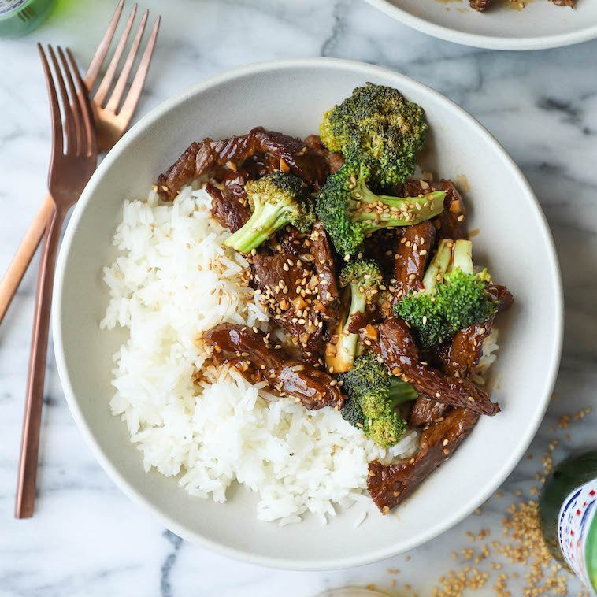

Beef & Broccoli

Ingredients
- 2/3 cup reduced sodium soy sauce
- 1/2 cup chicken stock
- 1/4 cup honey
- 2 tablespoons rice wine vinegar
- 2 tablespoons brown sugar, packed
- 3 cloves garlic, minced
- 1 tablespoon sesame oil
- 1 tablespoon cornstarch
- 1 teaspoon Sriracha, or more, to taste
- 1 teaspoon ground ginger
- 1/4 teaspoon red pepper flakes
- 1 tablespoon olive oil
- 1 pound flank steak, thinly sliced across the grain
- 1 head broccoli, cut into florets
Directions
- In a medium bowl, whisk together soy sauce, chicken stock, honey, vinegar, brown sugar, garlic, sesame oil,
cornstarch, Sriracha, ginger, red pepper flakes and 1/4 cup water; set aside.
- Heat olive oil in a large skillet over medium high heat. Add steak and cook, flipping once, until browned,
about 3-4 minutes.
- Stir in broccoli and soy sauce mixture until tender and slightly thickened, about 3-4 minutes.
- Serve immediately.